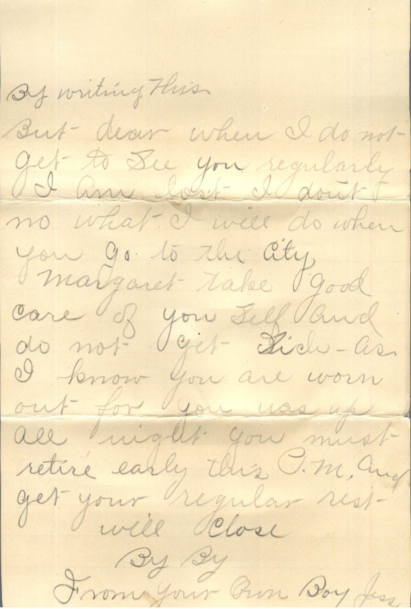
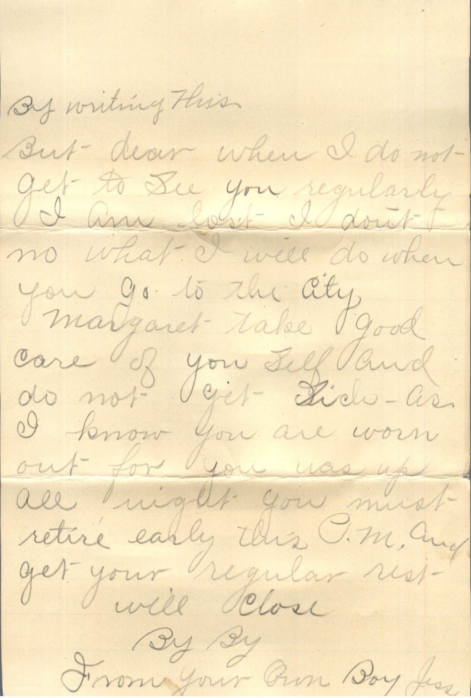
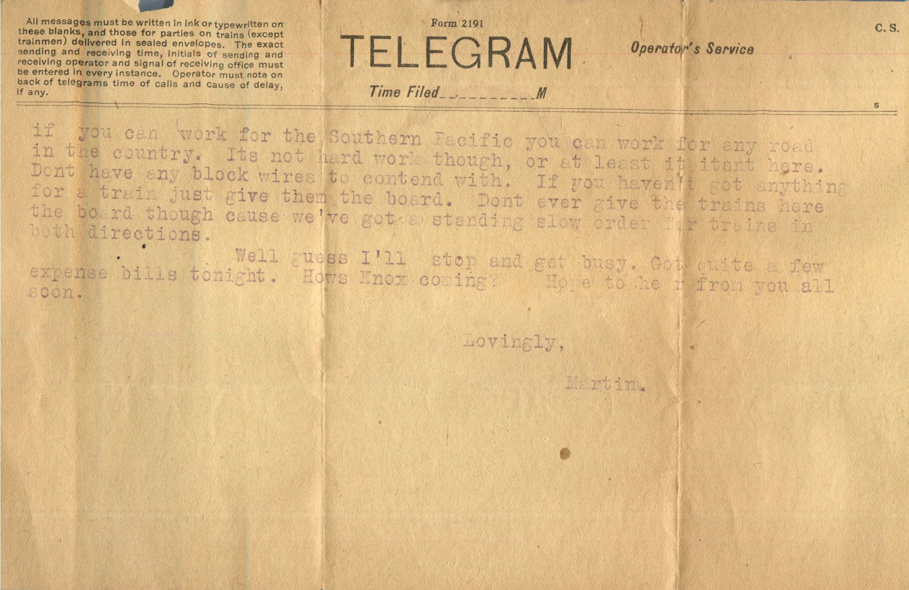
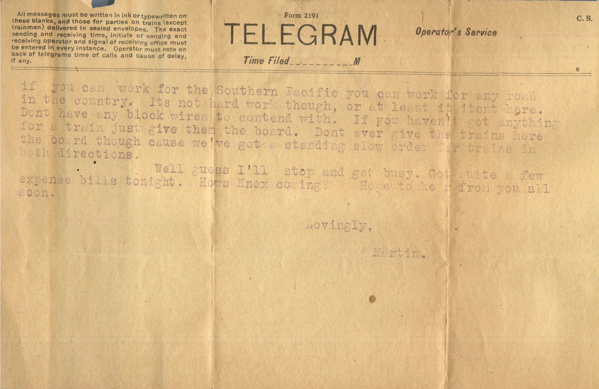

From: Bertha, To: Jeanette Knox
Postcard Info: 10X64 Made in USA
Dear Nettie
I think you will be interested to know that I have completed the quilts as I had planned and they are not bad looking quilts. I had Mrs. Grafford do another one, and she did much better work than on the first. While I put every stitch in the one for Mildred, have added two more on top of match and this will be a real surprise to Pauline, as she was so sure I'd never get her's done. We will spend Christmas day with Milgred and Paul's family.
Lovingly,
Bertha
We are leaving under fair weather so far, and no sickness as far as I know.

 
 
